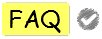
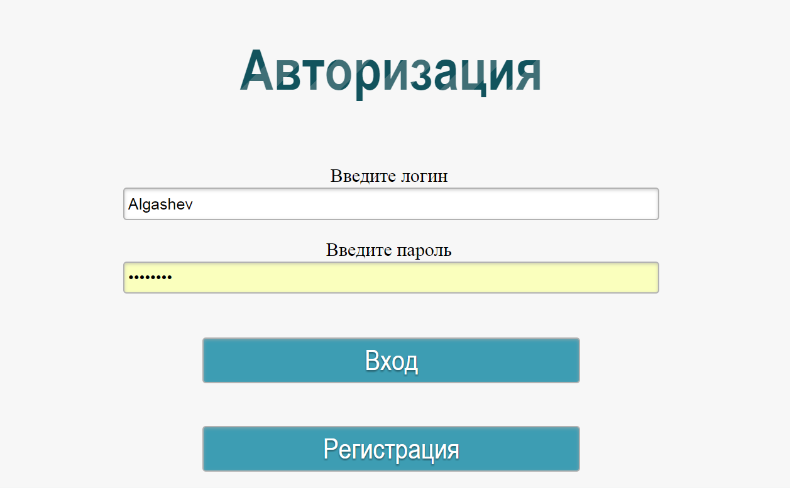
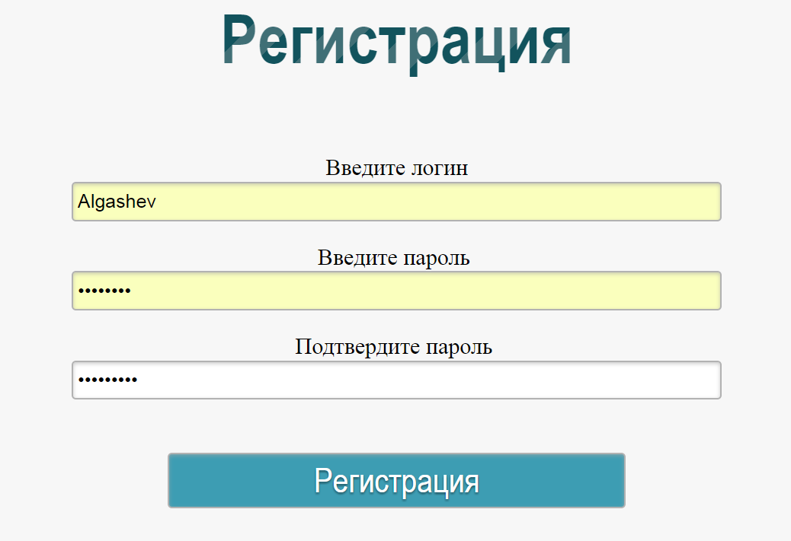
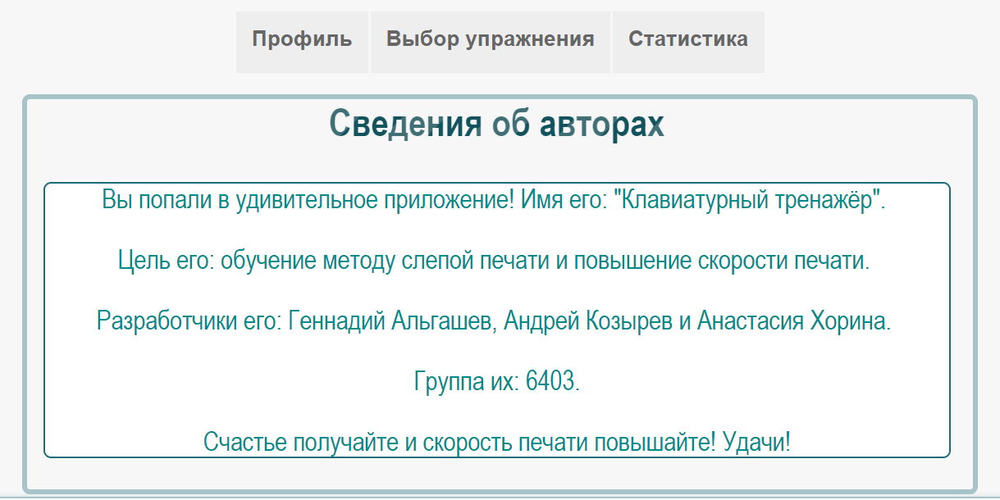

|  | ||
Сведения о приложенииВы попали в удивительное приложение!
Работа с системой в режиме администратора Авторизация в системе Страница авторизации представлена на рисунке А.1. У пользователя есть возможность войти в систему или зарегистрироваться в системе. Для регистрации в системе необходимо нажать кнопку «Регистрация», после чего система перейдет на страницу регистрации пользователя, представленной на рисунке А.2. Рисунок А.1 – Страница авторизации пользователя  Рисунок А.2 – Страница регистрации пользователя Создание упражнения Для создания упражнения необходимо перейти на вкладку «Создание упражнения» в меню администратора (рисунок А.3). 
Рисунок А.3 – Создание упражнения Для создания упражнения необходимо выбрать уровень сложности и создать текст упражнения Создание текста упражнения возможно тремя способами:
Обратите внимание: в тексте упражнения, возможно использование лишь символов, соответствующих выбранному уровню сложности, доступные символы подсвечиваются на виртуальной клавиатуре, расположенной в нижней части экрана. После выбора уровня сложности и создание текста, необходимо нажать кнопку «Создать упражнение». Созданное упражнение сохранится в базу данных упражнений. Настройка уровня сложности Для корректировки параметров уровня сложности необходимо перейти в пункт меню «Настройка уровня сложности» (рисунок А.4) 
Рисунок А.4 – Настройка уровня сложности Для настройки нужно выбрать настраиваемый уровень сложности из раскрывающегося списка, после чего откорректировать параметры, расположенные с правой части экрана и нажать кнопку «Изменить уровень». Работа с базой данной пользователей Для работы с базой данных пользователей, необходимо перейти в пункт меню «Учетные записи», после чего на главном экране отобразится база данных всех пользователей системы (рисунок А.5). 
Рисунок А.5 – Работа с учетными записями Для добавления пользователя нужно в первой (пустой) строке заполнить информацию о новом пользователе, а именно: логин, пароль, выбор уровня сложности (для обучаемого), тип доступа и нажать «Добавить» Для изменения данных уже существующих пользователей, нужно откорректировать данные и нажать кнопку «Изменить». Для удаления пользователя, нужно нажать кнопку «Удалить» рядом с учетной записью. Так же существует возможность просмотра статистика каждого обучаемого. Работа с системой в режиме обучаемого Авторизация в системе аналогична авторизации администратора, описанной в пункте «Авторизация пользователя» данного руководства. Изменение данных профиля Для изменения персональных данных пользователя необходимо перейти в пункт меню «Профиль» (рисунок А.6), внести изменения в данные и нажать «Изменить данные». Для изменения доступны следующие данные (логин, пароль, уровень сложности). 
Рисунок А.6 – Изменение данных пользователя Выбор упражнения Для прохождения упражнения необходимо перейти в пункт меню «Выбор упражнения» (рисунок А.7). 
Рисунок А.7 – Выбор упражнения В данном разделе отображаются упражнения. Доступные для прохождения упражнения подсвечиваются зеленым цветом, недоступные темно-зеленым. При нажатии на выбранное упражнение система перейдет на страницу прохождения упражнения (рисунок А.8) 
Рисунок А.8 – Прохождение упражнения При прохождении упражнения необходимо набирать символы, подверчивающиеся в строке. В момент выполнения упражнения фиксируется количество допущенных ошибок, скорость выполнения упражнения и время. Для завершения упражнения нажмите кнопку «Завершить упражнение». После чего система сформирует и отобразит статистику выполнения данного упражнения (рисунок А.9), а также запишет данные в общую статистику обучаемого. 
Рисунок А.9 – Статистика по упражнению Просмотр статистики Для просмотра общей статистики обучаемого нужно перейти в пункт меню «Статистика» (рисунок А.10) 
Рисунок А.10 – Статистика обучаемого После выбора временного периода статистики и вида отображения на основном поле отобразится статистика выполнения упражнений обучаемым (рисунок А.11) .PNG)
Рисунок А.11 – Отображение статистики обучаемого В зависимости от выбора вида отображения, отображается следующая информация:
Так же возможен просмотр информации о проекте, для этого на каждой странице, в правом верхнем углу, расположена кнопка «FAQ», при нажатии на которую, система перейдет на страницу справки (рисунок А.12). Рисунок А.12 – Справка о проекте |